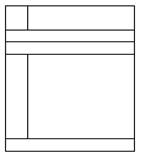

Marianopolis College - Autumn2017
PRO-LBM Web Page Design
Assignment 4
Due: October 27, 2017, 11:15 am
Exercise 1 | Exercise 2 | Exercise 3 | Files
Introduction. This assignment consists of three exercises. Of course, each exercise is to reside in a separate HTML document (i.e. page), with linked subdocuments if necessary. At the top of each exercise-mainpage, place the following line:
Previous | Next | [ 1 | 2 | 3 ]
and turn each word/number into a link to the appropriate exercise- mainpage. The "Previous" link of Exercise 1 links to Exercise 3 and the "Next" link of Exercise 3 links to Exercise 1; each number should be inactive on its own exercise page. These links duplicate the customary links from your Assignment 4 homepage. Remember to include on that main Assignment 4 homepage a short description of each exercise, so I know what I am about to see before following up the links.
| Top | Home |
Exercise 1:
Create a page for your courses. This page will contain one table that is your daily schedule, from Monday to Friday. The ‘blueprint’ of this table should be the schedule that you received at the beginning of the semester.
Your table will have 6 columns: the first one will contain the hours and the next five columns will be for Monday to Friday. In the first column you’ll have a row for each ½ hour, starting at 8:15 and ending at 18:15. For each course/break you’ll merge together as many rows as necessary. For each course, put course title (short) and teacher’s name; for breaks, leave them empty. For the ‘Activity Period’ (Tue and Thu, 12:45 - 2:00) write exactly this. Fill in the background of each course with a light shade of yellow and each break with a light shade of green. Fill in the 'Activity Period' with a light shade of magenta. Make background colours really light. For the title row of this table, write in bold and put a silver background.
At the top of your table, create a merged row across the 6 columns and put in bold and centered "Your name's schedule", without the quotation marks.
Hint: Use wisely style definitions and/or in-line style for cell background (see example presented in class). For the header (first row) colour, you may use <th> in the style definition.
| Top | Home |
Exercise 2:
Find 8 images suitable1 for background images in a web page. Make two 3 x 3 tables that display these images. Both tables must have the same width: 3nn pixels, where nn stands for the last two digits of your student number. (E.g.: if your student number is 0895678, the width of your tables will be 378 pixels.) The middle cell of each table should contain the link(s) to the site(s) where you found the images.
Make your 2 tables display one next to the other, with a space of 10 to 30 pixels between them.
In the first table, put the images in the table cells as regular images:
<td><img src="img1.gif"></td>
In the second table, put the images as background images of the table cells:
<td background="img1.gif"></td>
Important note: The pictures must be downloaded and submitted with your assignment. Do not use images that are physically on a remote site. You give the credit in the center of the table, but you use local copies.
1 This means that your images should be recognizable in both tables, have decent sizes to fit nicely in the tables and have light colours, to allow potential items in the second table to be visible.
| Top | Home |
Exercise 3:
Make a web page with the same appearance as the one given at the end of this exercise. The required images are available in the .gif files in the "images" folder. The borderless table structure is given below.

Suggestion: make this consist of three tables, in sequence. The first table should consist of just one row: one cell for the picture of the guitar, and one cell for each letter-image in the "Music Dept." title.
The next table has two rows: the first row has three cells, the music-bar image and two narrow, blank cells surrounding it. Give them equal width to achieve the centering effect shown in the picture. The second row has one long blue cell. The third table contains the rest.
Do NOT use the <FONT> tag to set the white color in the blue sidebar, and do not use the <u> tag repeatedly, to underline each list item. Use styles instead, as follows:
li {text-decoration: underline; font-size: 10pt; } - place this in the HEAD section, to specify underlined for each music category on the list (and make it a list!).
In the cell containing the heading "Our categories"( and the detailed list), use the inline attribute
style= '{color: white; font-size: 14pt; valign="top"}'.
This will automatically impose the white color on all text in this table cell.
For a close approximation to the darkish blue color of the "MUSIC" tag, try using the hex-code "#0314E4" for the table-cell background color - unless you can come up with a better approximation!
Hints:
- Make each table exactly 600 pixels wide.
- Set the widths of the letter-columns in pixels also. That way, you have precise control over the column widths. Just make sure that the column widths add up to the width of the whole table over any given horizontal line. Alternately, the width of the first table cell, the one with the image of the guitar, could be specified as a percentage.
- Remember that some browsers don't like to render empty table cells. If a colored cell is to be empty, just put some text in the cell that is the same color as the background, or use the space character-entity as an invisible filler.
- Use border="1" while you are designing the table layout. When finished, reset this value to zero. Visible table borders, in most situations, are tacky.
- Don’t bother with the space between the items of the list.
| Top | Home |
The graphic files needed for the Exercise 3 of this assignment are below:
| File Name | Graphic Image |
| C.GIF | |
| E.GIF | |
| I.GIF | |
| P.GIF |  |
| S.GIF | |
| T.GIF | |
| U.GIF | |
| capD.GIF | |
| capM.GIF | |
| PERIOD.GIF | |
| GUITAR.GIF | |
| MUSICBAR.GIF |
| Top | Home |
Basic Rule: Make the best to get your content to fit on the screen. In general, if you have more than one screen of information, it's OK if the user has to scroll down to see it, but the user should never have to scroll sideways.
Files needed for this assignment
For your convenience (as a quick reference), here are the files about styles (explained in class): styles and styles in a table.
| Top | Home |
Last update: October 17, 2017
Acknowledgment: this assignment is based on Prof. G. Fleischer’s original.